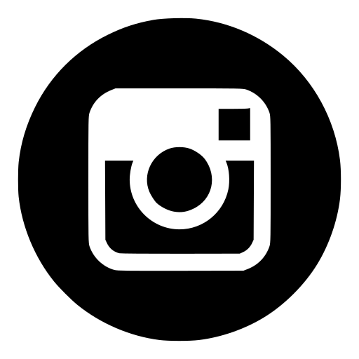
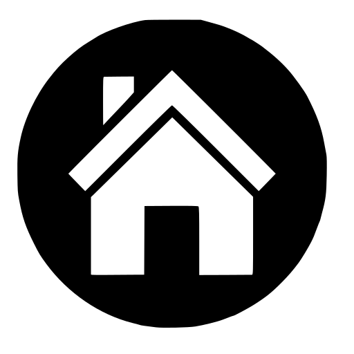

conferences
🌎 international
- 11° World Biomaterials Congress (WBC 2020) | december 2020
- International Union of Societies for Biomaterials Science and Engineering, Virtual | poster presentation | certificate | poster
- 🎴 Mechanical behavior symmetry of mussel shells and numerical method for biomaterial orthotropy directions.
- 19° Congreso Internacional de Metalurgia y Materiales (CONAMET-SAM 2019) | november 2020
- Universidad Austral de Chile, Valdivia, Chile | speaker presentation | certificate
- 🎤 Análisis de la respuesta biomecánica del Perumytilus purpuratus ante escenarios de cambio climático.
- 25° Congress of the European Society of Biomechanics (ESB 2019) | july 2019
- TU Wien, Vienna, Austria | 2 speaker presentation | certificate
- 🎤 Biomechanical behaviour on shell characteristics (Perumytilus purpuratus) along the chilean coast.
- 🎤 Numerical analysis of the biomechanical response of oyster shells subjected to climate change scenarios.
🇨🇱 chilean
- 2° Congreso de Estudiantes de Postgrado USACH (USACH 2020) | november 2020
- Universidad de Santiago de Chile, Virtual | speaker presentation | certificate
- 🎤 Perumytilus purpuratus: simetría de valvas y caracterización de dirección ortótropa.
- Congreso Chileno de Biomecánica y Biomateriales (CBIO 2020) | october 2020
- Universidad de Santiago de Chile, Virtual | speaker presentation | certificate
- 🎤 Perumytilus purpuratus: simetría de valvas y caracterización de dirección ortótropa.
🎥 recording
- 1° Congreso de Estudiantes de Postgrado USACH (USACH 2019) | august 2019
- Universidad de Santiago de Chile, Santiago, Chile | speaker presentation | certificate
- 🎤 Modelos constitutivos de crecimiento aplicados a la concha del Perumytilus purpuratus.
science populatization
Science for children
videos made by me and Katherine Contreras

-
- 🎞 density 🎞 surface stress 🎞 non-newtonian fluids
video on a blank page video on a blank page video on a blank page
-
Science Festival | Festival de la Ciencia (FECI2020 of PAR Explora Región Metropolitana Sur Poniente, ANID) | november 2020
- Universidad de Chile, Virtual | english certificate | spanish certificate
- STEM DIMEC-USACH |  | news link 1 | news link 2


-
Science Festival | 10° Feria Científica USACH | october 2019
- Universidad de Santiago de Chile, Santiago, Chile | spanish certificate
- biomechanics and biomaterials laboratory | news link 1 | news link 2


-
Exhibition | Molluscas, espiral del cambio of the CarboNatLab project | CiiCC
 | october 2019
- Museo de Historia Natural de Valparaíso (MHNV), Valparíso, Chile | english certificate
- carbonatlab | news link 1 | news link 2


-
Exhibition | XII Fiesta de la ciencia y la tecnología (PAR Explora Región Metropolitana Sur Oriente, ANID) | CiiCC
| october 2018
- PARQUEMET, Santiago, Chile | english
certificate
- carbonatlab | news link